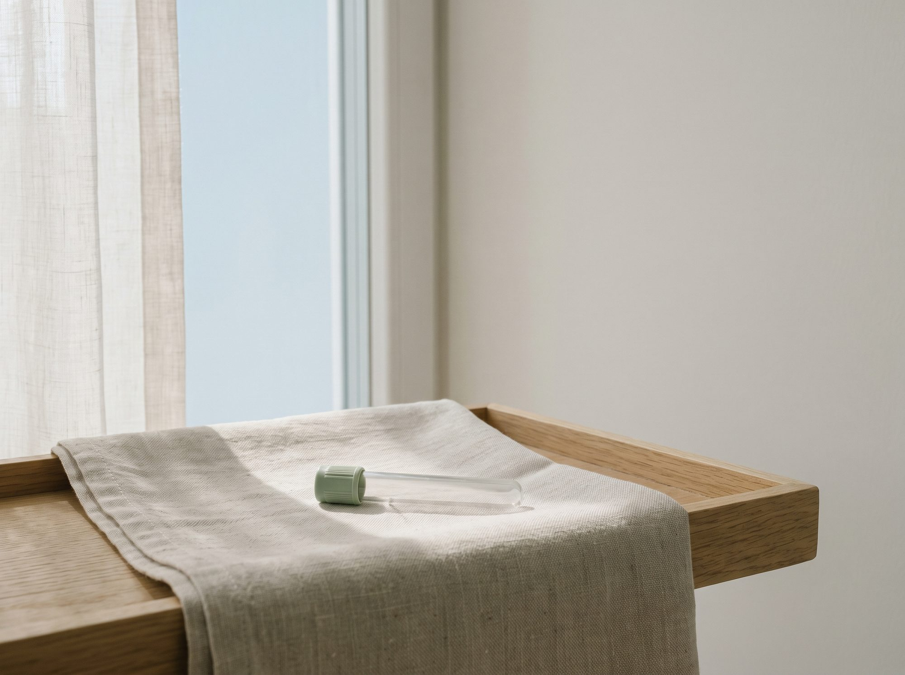
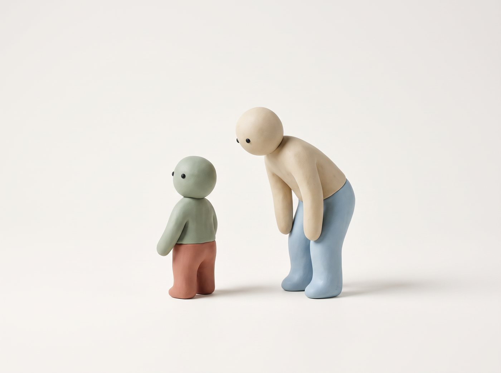
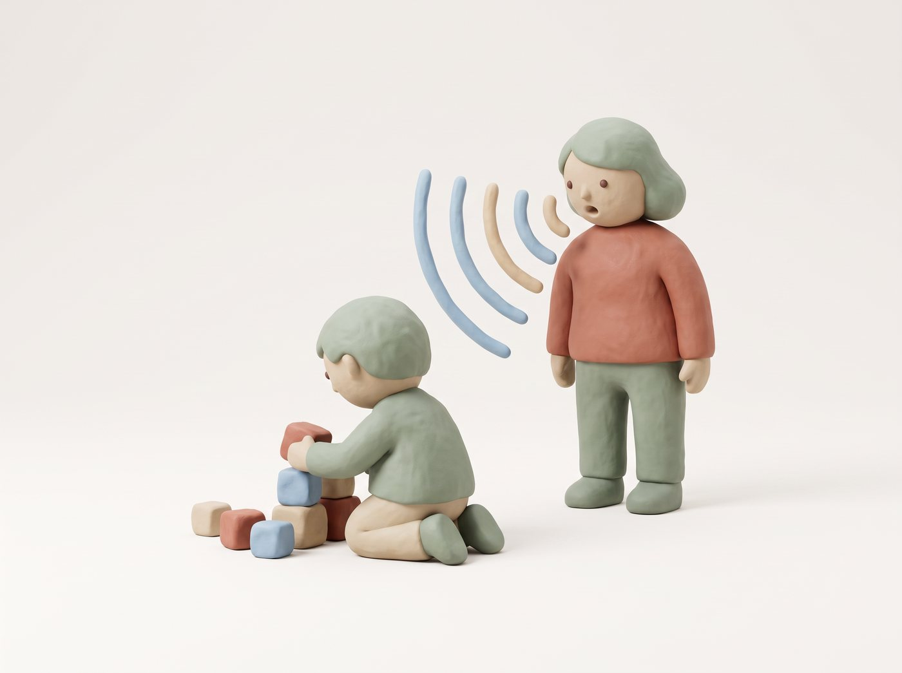
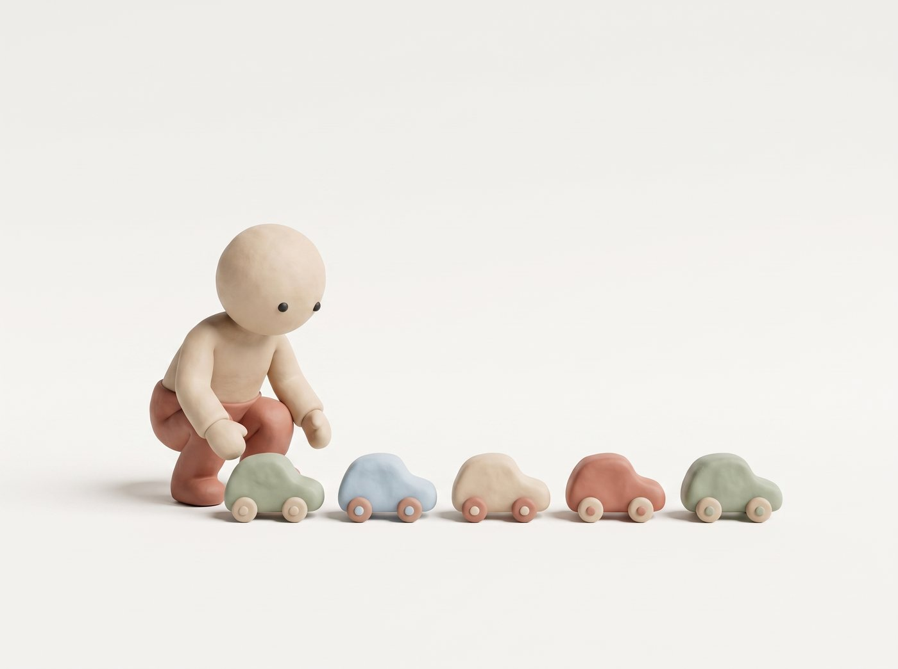
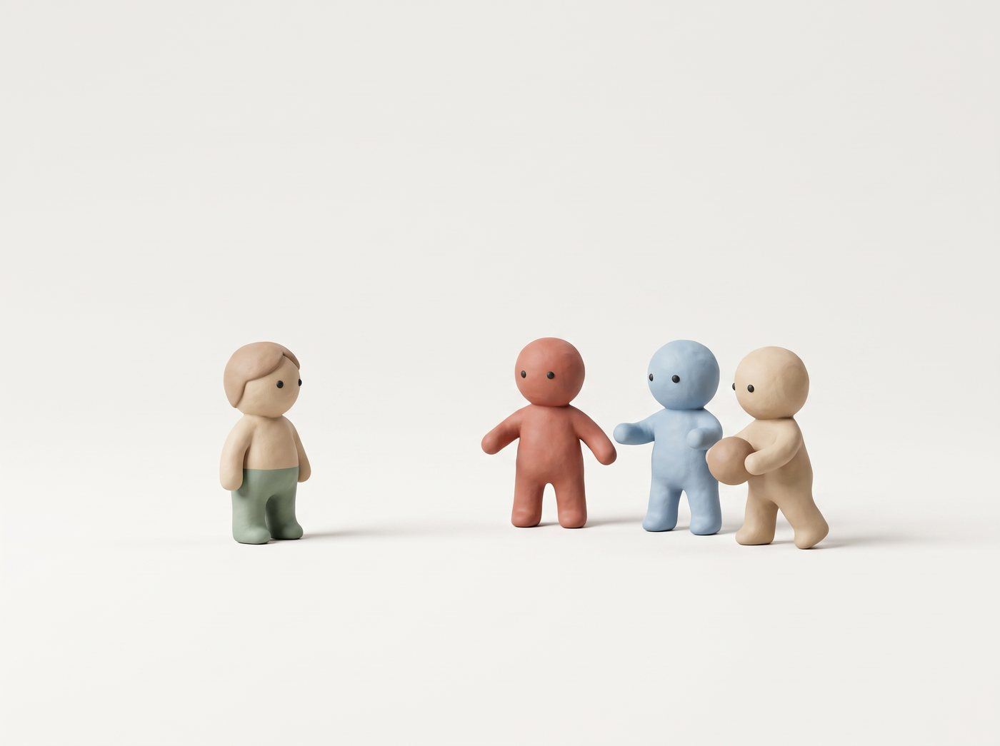

Autism Decoder Panel
$3,099$3,699
- 21 tests across 8 body systems
- One visit to your home
- A genetic counselor walks you through every result
- A written summary for your pediatrician
21
tests across 8 body systems
Home visit in a 2-hour window · results explained by a genetic counselor · 12 months of My Health
Your pediatrician said wait and see. The developmental clinic has a long waiting list. The Autism Decoder Panel looks at 21 biological factors across 8 body systems now, from one visit to your home.
Book the Autism Decoder PanelGenetic, metabolic, immune and nutritional factors, checked together. Otherwise you collect them one referral at a time.
30 minutes with our clinical team, using the CARS rating scale. No lab work.

One blood test for the antibodies that can block folate from reaching the brain.
$179$189
Not sure? and we'll go through it with you.
One sign on its own doesn't mean autism, though it's worth asking about. The CDC's current estimate is 1 in 31 eight-year-olds.
Book a free screening call



“When I noticed symptoms in my 2 year old, I felt helpless despite being from the healthcare industry. I approached 25+ different specialists, got all possible tests done but could not find the right answers. That's when we built YODAARA - so kids like mine could get all their tests in one place and also understand what to do next.”
Sudhakar Kancharla Founder and CEO
No. Autism is diagnosed by a specialist who observes your child. The panel looks for biological factors that may add to the symptoms, some of which can be treated.
We don't bill insurance. You pay by card or Apple Pay.
No. Switch them off on the panel page and upload the old reports. We'll price the rest. Custom panels don't include My Health.
A phlebotomist comes to your home, or you can bring your child to our Irving or The Colony clinic. Some tests also need a urine or stool sample, which you collect yourself.
5 to 7 weeks. Whole exome sequencing is the slowest part.
Yes. Export any report from My Health as a PDF.
Enter your ZIP on this page to check your address.